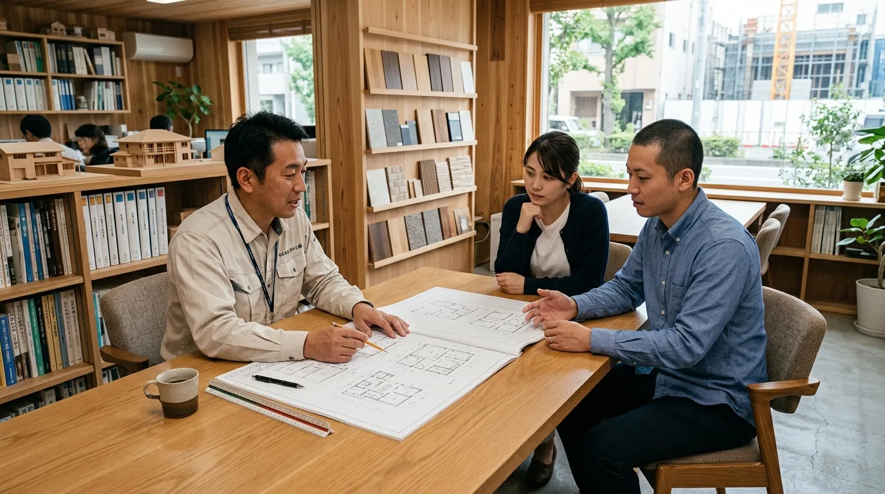
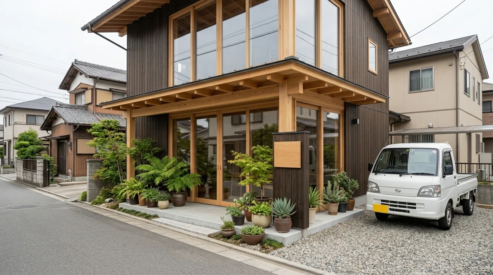
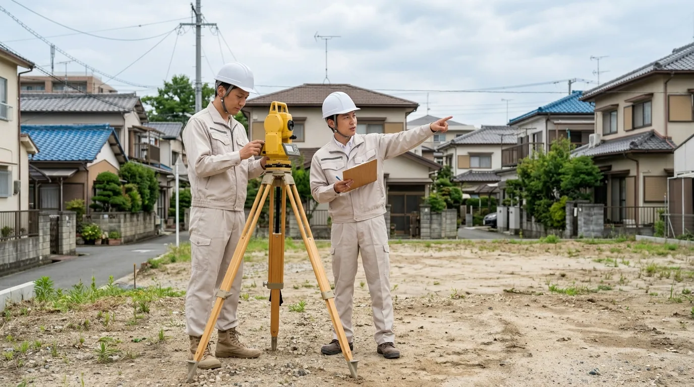
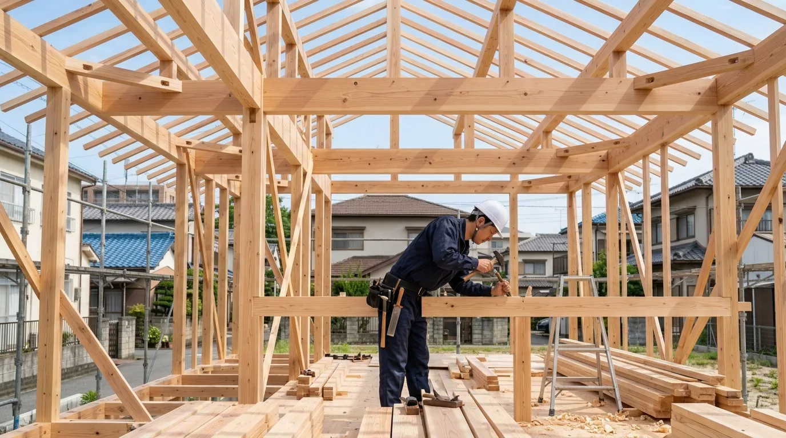
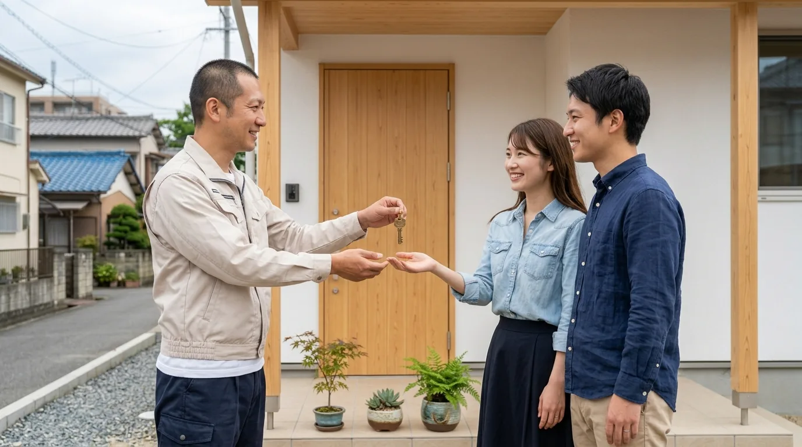
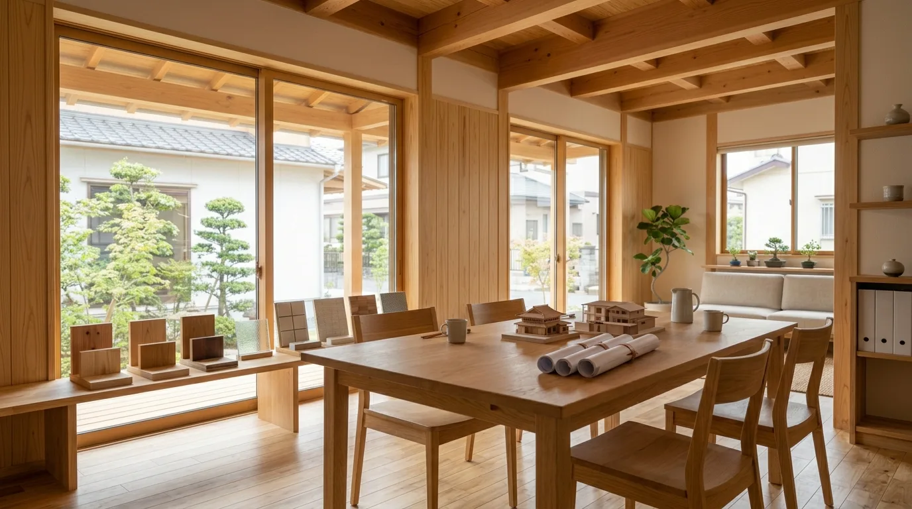
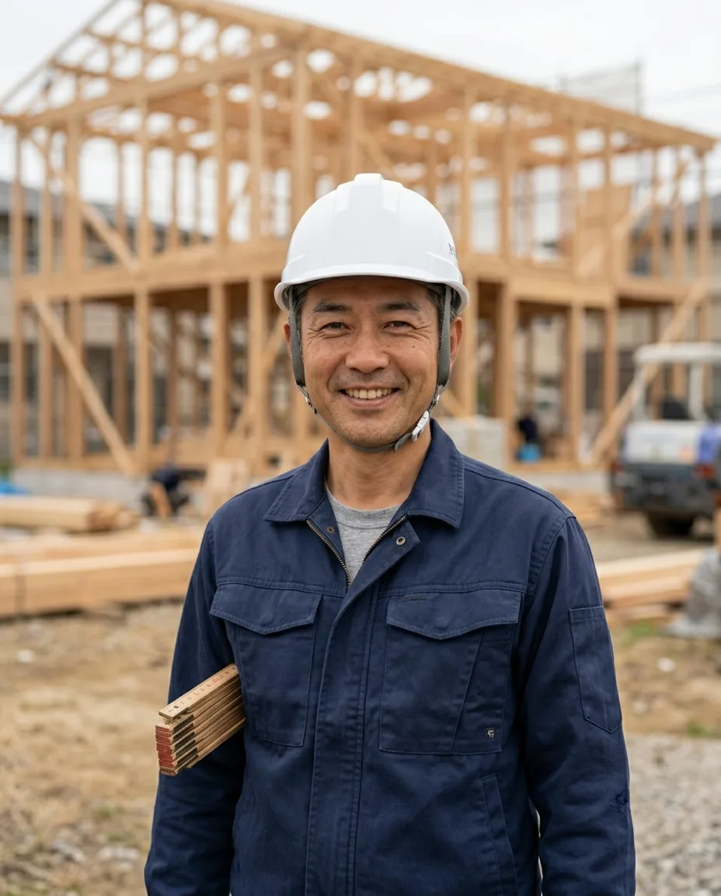

01
STEP
STEP 01ご相談・プラン作成
暮らし方とご予算をうかがってから、間取りの方向性を一緒に整理します。気になっている点は、この段階で全部出してください。決めきれないところは、決めないまま次に進めても構いません。
- 01-a暮らし方のヒアリング
- 01-bラフプランのご提示
ヒアリング／ラフプラン
これはRESCが作成したサンプルサイトです。実店舗ではありません。
RESCのサイトに戻るはじめてのご相談から、お引き渡しのあとの点検まで。どの段階で何を決めるのかを、順番に並べました。会社概要とアクセス、お問い合わせもこのシートにまとめています。

01
STEP
STEP 01暮らし方とご予算をうかがってから、間取りの方向性を一緒に整理します。気になっている点は、この段階で全部出してください。決めきれないところは、決めないまま次に進めても構いません。
ヒアリング／ラフプラン
02
STEP
STEP 02日当たりや風の抜け、隣家との距離を実際に見て確かめます。福岡の気候に合わせて、窓の位置や軒の出を決めていきます。図面の上だけでは分からないことが、現地に立つと見えてきます。
測量／法規確認
03
STEP
STEP 03基礎から軸組まで、工程ごとに現場の状況をご報告します。図面どおりに納まっているか、節目ごとに一緒にご確認いただけます。壁で隠れてしまう前の姿は、この時期にしか見られません。
基礎／建方／造作
04
STEP
STEP 04お引き渡しがゴールではありません。完成後も定期的に伺い、傷みが出る前に手を入れる。ここからが長いお付き合いの始まりです。気になることが出てきたら、いつでもご連絡ください。
引き渡し／定期点検

F-01
F-02OPENING HOURS — DIMENSION
CLOSED : SUN ｜ 定休日 日曜日
SITE PLAN — IMAGE配置はイメージです
ご来社の前にご連絡いただけると、打ち合わせスペースを空けてお待ちできます。現場に出ていることもあるので、お越しになる日時だけ先にお知らせください。
上の図は配置のイメージで、実際の地図ではありません